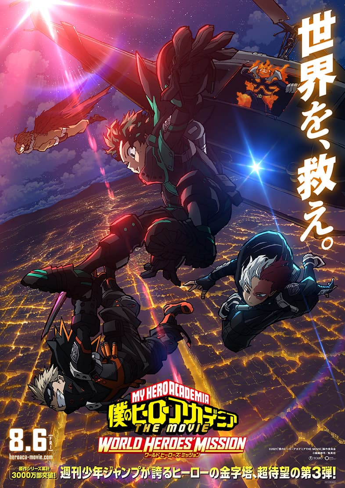

My Hero Academia: World Heroes Mission
|  |
Sipnosis"Estamos en un mundo donde abundan los superhéroes (y los supervillanos). Los mejores humanos son entrenados en la Academia de Héroes para optimizar sus poderes. Entre la minoria normal, sin poder alguno, aparece Izuku Midoriya, dispuesto a ser una excepción y formarse en la Academia para convertirse en leyenda."
|
|---|